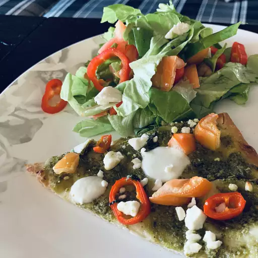

Home
Pesto Pizza

Description
This pesto pizza can be made with your favorite prepared pesto or homemade pesto. It's so quick to make for a light and flavorful alternative to regular cheese and tomato pizza!
Ingredients
- 1 (12 inch) pre-baked pizza crust
- 1/2 cup pesto
- 1 ripe tomato, chopped
- 1/2 cup green bell pepper, chopped
- 1 (2 ounce) can chopped black olives, drained
- 1/2 small red onion, chopped
- 1 (4 ounce) can artichoke hearts, drained and sliced
- 1 cup crumbled feta cheese
Steps
-
Preheat the oven to 450 degrees F (230 degrees C).
-
Spread pesto on pizza crust. Top with tomato, bell pepper, olives, red onion, artichoke hearts, and feta cheese.
-
Bake in the preheated oven until cheese is melted and browned, 8 to 10 minutes.